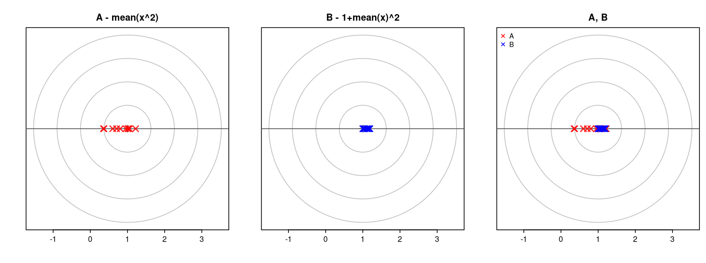
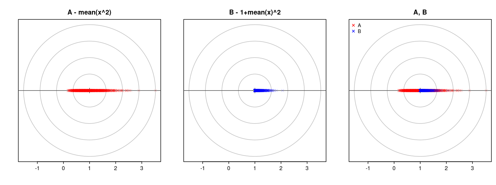
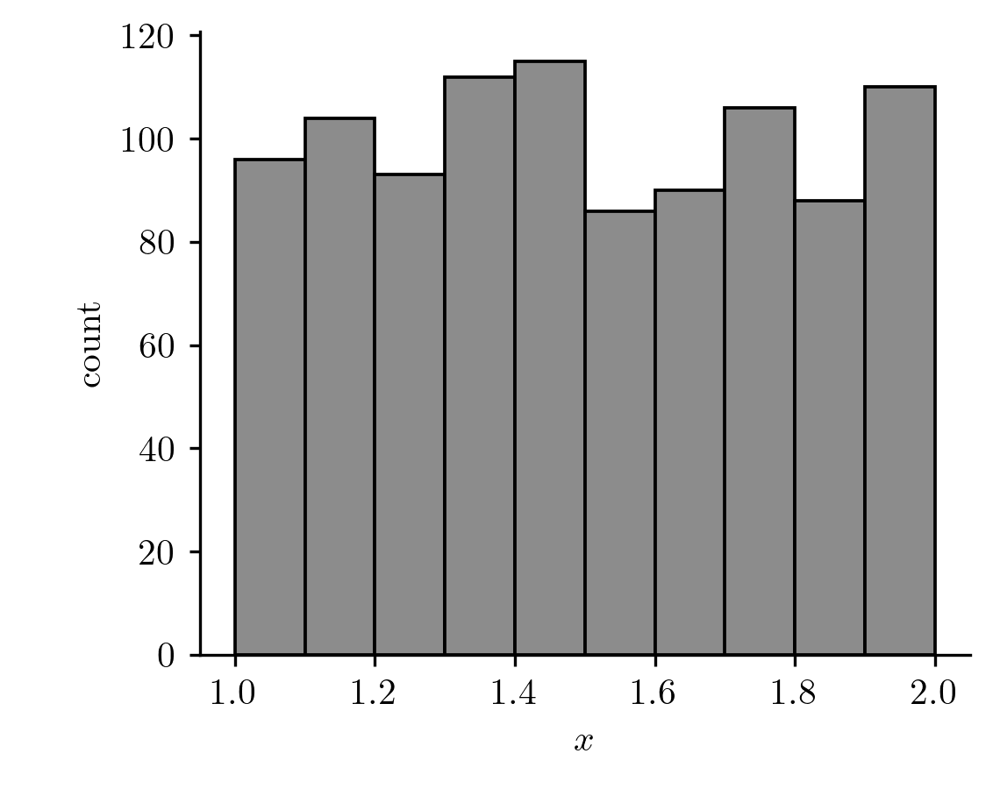
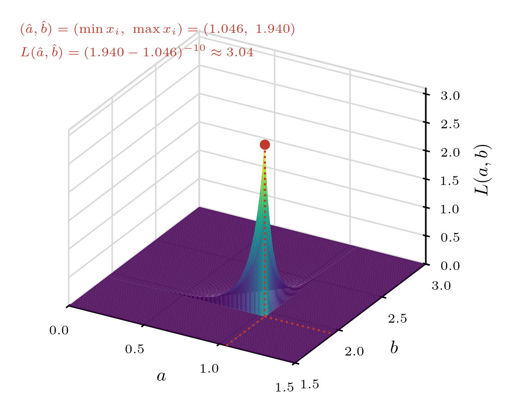
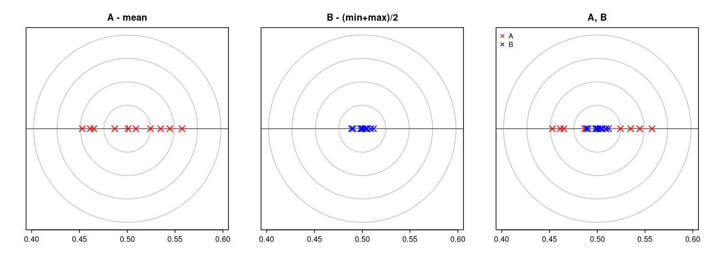
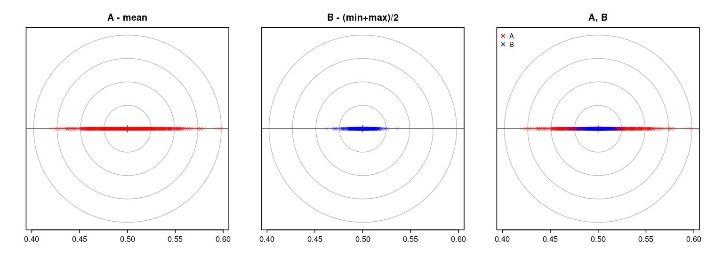
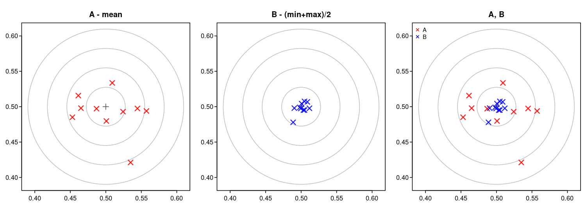
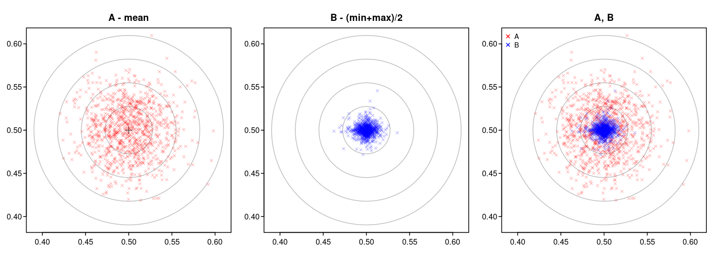

05wk-2: 최대가능도추정 (2)
1. 강의영상
2. MLE의 불변성
- MLE는 \(\theta\)만 추정할 수 있을까? 만약에 우리가 \(\theta\) 이외의 정보에 관심이 있다고 하자. 그러면 그것은 MLE로 추정할 수 없을까?
- \(\theta\)만 추정할 수 있는 게 아님. 진실세계의 모든 정보를 다 추정할 수 있다. (모수적 모델링 한정)
- 최대가능도추정의 논리전개: 진실세계의 모든 정보는 \(\theta\)로 압축된다 (\(\because\) 모수적 모델링). 그런데 우리는 그 \(\theta\)를 추정할 수 있다. 따라서 진실세계의 모든 정보를 추정할 수 있다. (신만 가지는 능력 “\(\theta \Rightarrow x\)” 를 을 \(\hat{\theta}\)로 흉내 낼 수 있는 셈)
# 예제1
공평한 동전을 5회 던져서 아래와 같은 결과를 얻었다고 하자.
- \(data\): 0, 1, 0, 0, 1
실패확률을 추정하라.
(풀이) – MLE에 기초한 풀이
\(X_1,X_2,\dots,X_n \sim Ber(\theta)\) 에서 MLE에 의한 \(\theta\)의 추정값은 \(\frac{2}{5}\)이므로 (왜?) 성공확률 \(\theta\)는 \(\frac{2}{5}\)로 추정할 수 있다. 실패할 확률은 \(1-\theta\)인데, \(\theta\)의 값을 이미 \(\frac{2}{5}\)로 추정했으므로 실패할 확률의 추정값은 \(1-\frac{2}{5}=\frac{3}{5}\)이라고 할 수 있다.
#
- 개념: MLE에 기반한 추정법은 아래와 같다.
- 모수를 MLE로 추정한다.
- 추정의 대상과 모수와의 함수관계를 파악한다.
- 1에서 얻은 추정값을 2에서 얻은 함수관계에 대입한다.
- 이 논리로 위의 예제를 다시 해석하면 아래와 같다.
- 모수를 추정한다: 베르누이 분포 \(Ber(\theta)\)의 모수는 성공확률 \(\theta\)이며, \(\theta\)의 추정값은 \(\frac{2}{5}\) 이다.
- 추정의 대상과 모수와의 함수관계를 파악한다: 추정의 대상은 실패확률이다. 그런데 “\(실패확률=1-\theta\)”라는 관계가 있는데 이것이 추정의 대상과 모수와의 함수관계이다.
- 1에서 얻은 추정값을 2에서 얻은 함수관계에 대입한다 (플러그인): 우리가 1에서 얻은 추정값은 \(\frac{2}{5}\)이다. 2에서 얻은 함수관계는 \[추정의대상=실패확률=1-\theta\]이다. 1에서 얻은 \(\theta\)에 대한 추정값 \(\frac{2}{5}\)를 위의 \(\theta\)자리에 플러그인하면 \(실패확률=\frac{3}{5}\)를 얻는다.
- 3의 과정을 수식으로 표현하면 아래와 같다.
\[\widehat{실패확률}^{MLE}=\widehat{1-\theta}^{MLE}=1-\hat{\theta}^{MLE}\]
이러한 논리전개는 언뜻 당연해 보이지만 사실 당연한 건 아니다. 아래와 같은 사실은
\[\widehat{1-\theta}^{MLE}=1-\hat{\theta}^{MLE}\]
일반적인 추정법에는 성립하지 않는다.
이 성질의 증명은 일반적인 수리통계학 교과서에서 배운다.
# 예제2
아래에서
\[X \sim N(\mu,1)\]
얻은 10개의 샘플이 다음과 같다고 하자.
- \(data\): -0.56047565, -0.23017749, 1.55870831, 0.07050839, 0.12928774, 1.71506499, 0.46091621, -1.26506123, -0.68685285, -0.44566197
\(\mathbb{E}(X^2)\)을 추정하라.
(풀이)
언뜻 생각하면 아래와 같이 추정해야 할 것 같다.
x = data = c(-0.56047565, -0.23017749, 1.55870831, 0.07050839, 0.12928774,
1.71506499, 0.46091621, -1.26506123, -0.68685285, -0.44566197)
mean(x^2)[1] 0.8243026그런데 \[\mathbb{E}(X^2)=\big[\mathbb{E}(X)\big]^2+\mathbb{V}(X)\]
임을 고려하면 아래와 같이 추정하는 것도 말이 되는 것 같다.
mean(x)^2 + 1[1] 1.005569두 값은 얼추 비슷하지만 완전히 같지는 않다. 둘 다 타당한 추정법인 것 같은데 무엇이 더 올바른 추정일까?
(분석)
A <- c()
B <- c()
for(i in 1:1000){
x <- rnorm(10)
A[i] <- mean(x^2)
B[i] <- 1+mean(x)^2
}

비교한 결과 방법A와 방법B 중에서는 방법B가 더 우수하다는 생각이 든다.
- 방법A: \(\text{mean}(x^2)=\overline{x^2}\)
- 방법B: \(1+\text{mean}(x)^2=1+\bar{x}^2\)
사실 방법B는 최대가능도방법의 원리로 추정된 값이다.
- 모수를 MLE로 추정한다: 정규분포 \(N(\mu,\sigma^2)\)의 모수는 \(\mu\)와 \(\sigma^2\)인데, \(\sigma^2=1\)로 주어졌으므로 추정할 필요가 없고, \(\mu\)를 추정하면 \(\bar{x}\)이다.
- 추정의 대상과 모수와의 함수관계를 파악한다: \(\mathbb{V}(X)=\mathbb{E}(X^2)-\{\mathbb{E}(X)\}^2\)의 관계가 있으므로 추정의 대상은 \(\mathbb{E}(X^2)=\sigma^2+\mu^2\)와 같이 표현할 수 있음. 그런데 \(\sigma^2=1\)이 주어졌으므로 “\(추정의대상=\mathbb{E}(X^2)=1+\mu^2\)” 의 관계가 있음.
- 1에서 얻은 추정값을 2에서 얻은 함수관계에 대입한다: 따라서 \[\widehat{\mathbb{E}(X^2)}=1+\bar{x}^2\] 이 예제에서도 최대가능도추정이 더 정확한 추정을 준다. (다만 방법B는 평균적으로 조금 크게 추정한다)
#
3. 균등분포
- 구간 \((a,b)\)에서 임의의 난수를 뽑는 실험
\[X \sim U(a,b)\]
- 히스토그램을 그려보자. (이때 \(a=1, b=2\)를 가정함)

- PDF 표현1 (히스토그램의 극한을 상상)
\[f_X(x)=\frac{1}{b-a}, \quad a \leq x \leq b\]
- PDF 표현2 (지시함수를 이용한 표현)
\[f_X(x)=\frac{1}{b-a}I(a \leq x \leq b)\] - 지시함수 복습(?)
- 정의: \[I(P)=\begin{cases} 1 & \text{if } P \text{ is true} \\ 0 & \text{if } P \text{ is false} \end{cases}\] where \(P\) is any statement whatever.[^iverson]
- 예: \(I(x \leq b)\), \(I(a \leq x \leq b)\)
- 성질1: \(I(P)\,I(Q) = I(P \text{ and } Q)\)
- 예: \(I(a \leq x)\,I(x \leq b) = I(a \leq x \leq b)\)
- 성질2: \(I(a \leq x_1)\,I(a \leq x_2)\cdots I(a \leq x_n) = I\big(a \leq \min(x_1,\dots,x_n)\big)\)
- 성질3: \(I(x_1 \leq b)\,I(x_2 \leq b)\cdots I(x_n \leq b) = I\big(\max(x_1,\dots,x_n) \leq b\big)\)
- 성질4: \(I(a \leq x_1 \leq b)\cdots I(a \leq x_n \leq b) = I\big(a \leq \min(x_1,\dots,x_n)\big)\,I\big(\max(x_1,\dots,x_n) \leq b\big)\)
# 예제3
아래에서
\[X \sim U(a,b)\]
얻은 10개의 샘플이 다음과 같다고 하자.
- \(data\): 1.28757752, 1.78830514, 1.40897692, 1.88301740, 1.94046728, 1.04555650, 1.52810549, 1.89241904, 1.55143501, 1.45661474
\(\mathbb{E}(X)\)를 추정하라.
(1) 가능도함수를 구하라.
(풀이)
\[ \begin{aligned} L(a,b) &= \frac{1}{b-a}I(a \leq x_1 \leq b) \times \dots \times \frac{1}{b-a}I(a \leq x_{10} \leq b) \\ &= \frac{1}{(b-a)^{10}}\, I(a \leq x_1 \leq b) \cdots I(a \leq x_{10} \leq b) \\ &= \frac{1}{(b-a)^{10}}\, I\big(a \leq \min(x_1,\dots,x_{10})\big)\, I\big(\max(x_1,\dots,x_{10}) \leq b\big) \quad (\because \text{성질4}) \\ &= \frac{1}{(b-a)^{10}}\, I(a \leq 1.046)\, I(1.940 \leq b) \end{aligned} \]
(2) 가능도함수의 값을 표로 정리하자.
| \(b=1.5\) | \(b=1.8\) | \(b=2.1\) | \(b=2.4\) | \(b=2.7\) | \(b=3\) | |
|---|---|---|---|---|---|---|
| \(a=0\) | ||||||
| \(a=0.3\) | ||||||
| \(a=0.6\) | ||||||
| \(a=0.9\) | ||||||
| \(a=1.2\) | ||||||
| \(a=1.5\) |
(풀이)
(1)에서 \(\min(x_1,\dots,x_{10})=1.046\), \(\max(x_1,\dots,x_{10})=1.940\) 이므로
\[L(a,b)=\frac{1}{(b-a)^{10}}\, I(a \leq 1.046)\, I(1.940 \leq b)\]
이다. 즉 \(a \leq 1.046\) 이고 \(b \geq 1.940\) 이면 \(L(a,b)=(b-a)^{-10}\) 이고, 그렇지 않으면 \(L(a,b)=0\) 이다. 이를 표로 정리하면 아래와 같다.
| \(b=1.5\) | \(b=1.8\) | \(b=2.1\) | \(b=2.4\) | \(b=2.7\) | \(b=3\) | |
|---|---|---|---|---|---|---|
| \(a=0\) | \(0\) | \(0\) | \((2.1-0)^{-10}\) | \((2.4-0)^{-10}\) | \((2.7-0)^{-10}\) | \((3-0)^{-10}\) |
| \(a=0.3\) | \(0\) | \(0\) | \((2.1-0.3)^{-10}\) | \((2.4-0.3)^{-10}\) | \((2.7-0.3)^{-10}\) | \((3-0.3)^{-10}\) |
| \(a=0.6\) | \(0\) | \(0\) | \((2.1-0.6)^{-10}\) | \((2.4-0.6)^{-10}\) | \((2.7-0.6)^{-10}\) | \((3-0.6)^{-10}\) |
| \(a=0.9\) | \(0\) | \(0\) | \((2.1-0.9)^{-10}\) | \((2.4-0.9)^{-10}\) | \((2.7-0.9)^{-10}\) | \((3-0.9)^{-10}\) |
| \(a=1.2\) | \(0\) | \(0\) | \(0\) | \(0\) | \(0\) | \(0\) |
| \(a=1.5\) | \(0\) | \(0\) | \(0\) | \(0\) | \(0\) | \(0\) |
실제로 계산하면 아래와 같다. (소수 다섯째 자리까지, \(\color{red}{\text{빨간 글씨}}\)는 표에서 가장 큰 값)
| \(b=1.5\) | \(b=1.8\) | \(b=2.1\) | \(b=2.4\) | \(b=2.7\) | \(b=3\) | |
|---|---|---|---|---|---|---|
| \(a=0\) | \(0\) | \(0\) | \(0.00060\) | \(0.00016\) | \(0.00005\) | \(0.00002\) |
| \(a=0.3\) | \(0\) | \(0\) | \(0.00280\) | \(0.00060\) | \(0.00016\) | \(0.00005\) |
| \(a=0.6\) | \(0\) | \(0\) | \(0.01734\) | \(0.00280\) | \(0.00060\) | \(0.00016\) |
| \(a=0.9\) | \(0\) | \(0\) | \(\color{red}{0.16151}\) | \(0.01734\) | \(0.00280\) | \(0.00060\) |
| \(a=1.2\) | \(0\) | \(0\) | \(0\) | \(0\) | \(0\) | \(0\) |
| \(a=1.5\) | \(0\) | \(0\) | \(0\) | \(0\) | \(0\) | \(0\) |
표를 보면 \((a,b)=(0.9, 2.1)\)에서 최대값을 가지는 듯하다.
가능도함수의 그림을 그려보자.

그림으로 봐도 \((a,b)=(1.1,1.9)\) 근처에서 최대값을 가지는 것 같다.
(3) 모수 \((a,b)\)를 최대가능도방법을 이용하여 추정하라.
(풀이)
가능도함수는 아래와 같다.
\[L(a,b)=\frac{1}{(b-a)^{10}}\times I(a \leq 1.046)\times I(1.940 \leq b)\]
수식을 살펴보면 (1) \(a\leq 1.046\) 이고 \(b\geq 1.940\)일 경우만 가능도함수는 \(0\)이 아닌 값을 가지고 (2) 그 값은 \((b-a)\)가 작을수록 커지므로
\[(a,b)=(1.046,\ 1.940)\]
에서 최대값을 가진다.
이 결과는 일반화할 수 있으므로 아래와 같이 정리할 수 있다.
\(X_1,\dots,X_n \overset{iid}{\sim} U(a,b)\) 일 때 가능도함수는 아래와 같고, \[L(a,b)=\frac{1}{(b-a)^n}\times I(a \leq \min(x_1,\dots,x_n)) \times I(\max(x_1,\dots,x_n)\leq b)\] \(a,b\)를 최대가능도방법으로 추정하면 각각 아래와 같다.
- \(\hat{a} = \min(x_1,\dots,x_n)\)
- \(\hat{b} = \max(x_1,\dots,x_n)\)
(4) \(\mathbb{E}(X)\)의 값을 최대가능도방법을 사용하여 추정하라.
(풀이)
아래를 다시 따르면 된다.
- 모수를 최대가능도방법으로 추정한다.
- 추정의 대상과 모수와의 함수관계를 파악한다.
- 1에서 얻은 추정값을 2에서 얻은 함수관계에 대입한다.
1. 균등분포의 모수는 \(a,b\)이고 이를 각각 추정한 결과는 \(\min(x_1,\dots,x_n)\), \(\max(x_1,\dots,x_n)\)이다.
2. 추정의 대상은 \(X\)의 평균인데 이 값은 (직관적으로)
\[\mathbb{E}(X)=\frac{a+b}{2}\]
와 같이 계산할 수 있다.
\(X \sim U(a,b)\)의 pdf는 \(f_X(x)=\frac{1}{b-a}I(a \leq x \leq b)\) 이므로
\[ \begin{aligned} \mathbb{E}(X) &= \int_{-\infty}^{\infty} x f_X(x)\,dx = \int_a^b \frac{x}{b-a}\,dx \\ &= \frac{1}{b-a}\left[\frac{x^2}{2}\right]_a^b = \frac{b^2-a^2}{2(b-a)} \\ &= \frac{(b-a)(b+a)}{2(b-a)} = \frac{a+b}{2} \end{aligned} \]
3. 따라서 평균의 추정값은 \(\frac{\min(x_1,\dots,x_n)+\max(x_1,\dots,x_n)}{2}\)로 계산할 수 있다.
#
# (보는) 예제4
\(X \sim U(0,1)\)에서 \(n=100\)개의 샘플을 뽑아 중심 \(\mathbb{E}(X)=0.5\)를 추정한다고 하자. 두 가지 방법을 생각할 수 있다.
- 방법A: 표본평균 \(\bar{x}\)
- 방법B: \(\frac{\min(x_1,\dots,x_n)+\max(x_1,\dots,x_n)}{2}\) (예제3의 (4)에서 구한 최대가능도방법의 추정값)
이 실험을 여러 번 반복하여 추정값을 과녁에 찍어 보자. 과녁의 중심이 참값 \(0.5\)이다.
먼저 수직선 위에 10번, 그리고 1000번 찍어 보면 아래와 같다.


이번에는 샘플을 두 번 독립적으로 뽑아 하나는 가로축, 하나는 세로축의 추정값으로 삼아 2차원 과녁에 찍어 보자. 10번, 그리고 1000번 찍어 보면 아래와 같다.


방법B(파란색)가 방법A(빨간색)보다 과녁의 중심에 훨씬 좁게 모인다. 즉 “평균은 표본평균으로 추정하는 것이 최고”라는 생각이 항상 맞는 것은 아니다.
피셔(Fisher, 1922)는 끝점이 뚜렷한 분포에서는 적률법(MME)의 효율이 크게 떨어진다는 것을 보였다. 이런 분포에서는 최대가능도방법(MLE)이 훨씬 낫다.
#
4. 연습문제
# 문제1
1이 나올 확률이 \(\theta\)인 동전을 3번 던져서 아래와 같이 나왔다고 하자.
- \(data\): 0, 1, 0
\(\theta\)를 최대가능도방법으로 추정하고자 한다.
(1) \(L(0.1)\)의 값과 \(L(0.9)\)의 값을 구하라.
(2) 아래의 가능도표를 채우라.
| \(\theta\) | \(L(\theta) = \theta(1-\theta)^2\) |
|---|---|
| 0.495 | |
| 0.496 | |
| 0.497 | |
| 0.498 | |
| 0.499 | |
| 0.500 | |
| 0.501 | |
| 0.502 | |
| 0.503 | |
| 0.504 | |
| 0.505 |
(3) \(L(\theta)\)를 확률로 해석할 수 없는 이유를 (2)의 결과를 통하여 설명하라.
(4) \(L(\theta)\)를 \(\theta\)와 관련된 수식으로 표현하라.
(5) \(L(\theta)\)를 최대화하는 값을 이론적으로 구하라. 즉 성공확률을 최대가능도방법으로 추정하라.
(6) 실패확률을 최대가능도방법으로 추정하라.
(7) 모분산을 최대가능도방법으로 추정하라.
힌트: 베르누이분포의 모분산은 \(\mathbb{V}(X)=\theta(1-\theta)\)으로 알려져 있다.
(8) 모표준편차를 최대가능도방법으로 추정하라.
(9) 1이 나올 때까지의 기대시행수를 최대가능도방법으로 추정하라.
힌트: 동전을 1이 나올 때까지 반복해서 던진다고 하자.
0 0 0 1\(\to\) 4번째에 처음 1이 나옴 (시행수 = 4)0 1\(\to\) 2번째에 처음 1이 나옴 (시행수 = 2)1\(\to\) 1번째에 바로 1이 나옴 (시행수 = 1)0 0 0 0 0 0 1\(\to\) 7번째에 처음 1이 나옴 (시행수 = 7)이러한 “첫 성공까지의 시행수”를 \(Y\)라 하면 \(\mathbb{E}(Y) = 1/\theta\)로 알려져 있다. (기하분포)
#
# 문제2
아래에서
\[X \sim U(0,\theta)\]
얻은 4개의 샘플이 다음과 같다고 하자.
- \(data\): 0.1, 0.2, 0.6, 0.85
(1) \(L(0.8)\), \(L(0.9)\), \(L(1.0)\)의 값을 구하라.
(2) (1)의 결과로 볼 때 \(\theta\)는 0.8, 0.9, 1.0 중 어떠한 값으로 추정하는 것이 가장 합리적인가? (이유도 쓸 것)
(3) \(L(\theta)\)를 최대화하는 값을 이론적으로 계산하라.
(4) 모평균을 최대가능도방법으로 추정하라.
(5) 모분산을 최대가능도방법으로 추정하라.
힌트: \(X \sim U(0,\theta)\)일 때, \(\mathbb{V}(X)=\theta^2/12\)로 알려져 있다.
#
# 문제3
아래에서
\[X \sim N(\theta, 1)\]
얻은 2개의 샘플이 다음과 같다고 하자. (분산 \(\sigma^2=1\)은 알려져 있음)
- \(data\): 2.1, 2.5
(1) \(L(\theta)\)를 \(\theta\)와 관련된 수식으로 표현하라.
(2) \(L(2.1)\), \(L(2.3)\), \(L(2.5)\)의 값을 구하라.
힌트: \(X \sim N(\mu, 1)\)일 때, \(f(x) = \frac{1}{\sqrt{2\pi}}\exp\left(-\frac{(x-\mu)^2}{2}\right)\)
(3) (2)의 결과로 판단하면 최대가능도방법의 관점에서 \(\theta\)가 2.1, 2.3, 2.5 중 어떠한 값이라고 추정하는 것이 가장 타당한가? (이유도 쓸 것)
(4) \(L(\theta)\)의 값을 최대화하는 \(\theta\)를 이론적으로 구하라.
(5) \(\mathbb{E}(X^2)\)을 최대가능도방법으로 추정하라.
힌트: \(X \sim N(\theta, 1)\)일 때, \(\mathbb{E}(X^2) = \theta^2 + 1\)
(6) \(\mathbb{E}[(X-1)^2]\)을 최대가능도방법으로 추정하라.
힌트: \(\mathbb{E}[(X-1)^2] = \mathbb{V}(X) + [\mathbb{E}(X)-1]^2 = 1 + (\theta - 1)^2\)
#
# 문제4
아래와 같은 가능도함수가 주어졌다.
\[L(\mu) = \exp\left[-\frac{1}{2}\left\{(\mu-1.5)^2 + (\mu-3.2)^2 + (\mu-4.8)^2 + (\mu-6.5)^2\right\}\right]\]
\(\mu\)의 최대가능도추정값 \(\hat{\mu}\)를 구하라.
#
# 문제5
아래와 같은 가능도함수가 주어졌다.
\[L(a) = \frac{1}{(10-a)^3} I(a \leq 2.7)\]
(1) \(a\)의 최대가능도추정값 \(\hat{a}\)를 구하라.
(2) 모평균을 최대가능도방법으로 추정하라.
#
# 문제6
아래와 같은 가능도함수가 주어졌다.
\[L(b) = \frac{1}{b^5} I(b \geq 8.3)\]
(1) \(b\)의 최대가능도추정값 \(\hat{b}\)를 구하라.
(2) 모평균을 최대가능도방법으로 추정하라.
#
# 문제7
균등분포 \(U(a,b)\)의 가능도함수는 다음과 같다.
\[L(a,b)=\frac{1}{(b-a)^n} \times I(a \leq \min(x_1,\dots,x_n)) \times I(\max(x_1,\dots,x_n) \leq b)\]
이 가능도함수에 대한 진술로 올바른 것을 모두 고르라.
- 재석: “\(a > \min(x_1,\dots,x_n)\) 이면 가능도는 0이야.”
- 동엽: “\(b < \max(x_1,\dots,x_n)\) 이면 가능도는 0이지.”
- 호동: “\((b-a)\) 가 클수록 가능도가 커져.”
- 효리: “그래서 \(a=\min(x_1,\dots,x_n)\), \(b=\max(x_1,\dots,x_n)\) 일 때 가능도가 최대야.”
#